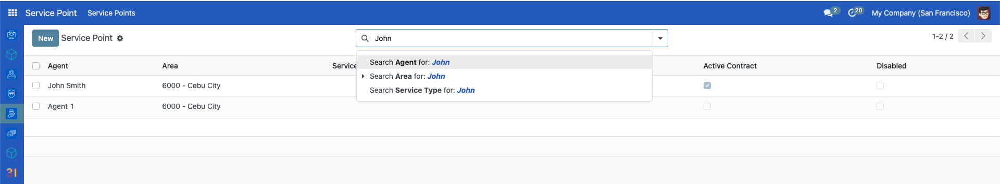

Setting up service points
Contents
Setting up service points#
A service point is a virtual or physical location where individuals can receive or access their social protection services and benefits. Setting up service points is crucial for entitlement delivery to ensure that services and benefits are delivered to the recipients correctly. In this tutorial, you will learn how to set up service points.
Prerequisites#
To configure Service Points, you need to:
Have an access role as an System Admin. Learn more in this guide: user_access.
Make sure that the modules spp_programs_sp (OpenSPP Programs: Service Points Integration) and spp_service_points (OpenSPP Service Points Management) are installed. Learn more on installing additional modules in the Module installation
Objective#
After completing this tutorial, you will understand how to create, update, disable, enable, and export service points in OpenSPP.
Process#
Service points-related tasks such as creating, updating, listing, disabling, enabling, and exporting CSV are performed on the Service Point page.
You can access the service point page by clicking on the menu icon on the left side of the header and clicking Service Point on the dashboard.

Filtering service points#
You can filter the list of service points by using the Search bar. Type the text you want to search for, for example, if you search for a service point with the agent name of John. Type the word John and click the Search Agent for John.

The list will be filtered with agents named John.

You can also group service points by field. For example, you want to group by Area. Click Group By, and a dropdown will show. Click Area, the result list will be a group of service types by Area list.


To filter service points using service type fields like Active Contract, click the Arrow down icon in the Search bar and click the Add Custom Filter.

If you want to filter service points with Active Contract, click Active Contract is set.

The list of service points with Active Contract will be displayed.

Creating service point#
To create a service point, click the New button, you will be redirected to a form.

Fill in the Agent Name, Address, Phone Number, and other fields. Select the Area from the list, add Service Types, tick Active Contract, and hit the Save button.

Updating service point#
Choose the service point you want to update from the list of service points. You will be redirected to the view page. Update fields and click the Save button.

You can disable a service point by clicking the Disable button. The beneficiaries won't be able to redeem their entitlements from this service point.
To enable a disabled service point, click the service from the list, then click Enable.
Exporting service points#
On the Service Point page, you can use the export feature to download service points. You can use filters to narrow down the fields you want your list to have. Use the Group By feature to group service points. For example, group service points by Area, click Group By, and select Area.

Click the Gear icon, and click Export All as a CSV file. The result CSV will contain a grouped by Area service points.

The specific steps and interface may vary depending on the OpenSPP version. Always seek assistance from the support team if you need further guidance.